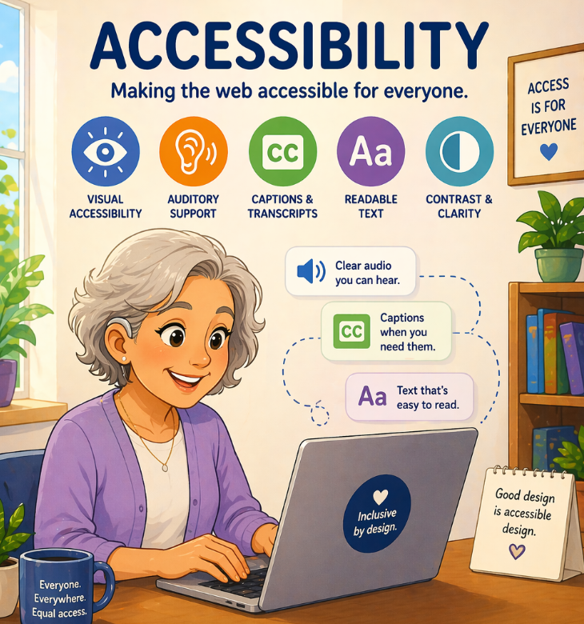

Accessibility & Inclusive Design
Designing websites that can be used by everyone, regardless of ability.
Image

Overview
Web accessibility ensures that websites can be used by people with a wide range of abilities, including visual, auditory, motor, and cognitive impairments. Inclusive design expands on this by considering diverse users from the start and creating flexible, usable experiences for everyone.
Key Concepts
Alt Text
Provides descriptions for images so screen readers can interpret content.
Color Contrast
Ensures text is readable against background colors.
Keyboard Navigation
Allows users to navigate without a mouse.
Clear Structure
Headings and layout help users understand content easily.
What I Learned
I learned that accessibility is not just a checklist but a mindset. Designing with accessibility in mind improves usability for all users, not just those with disabilities. Small decisions, like proper labeling and layout, can have a big impact on how users experience a site.